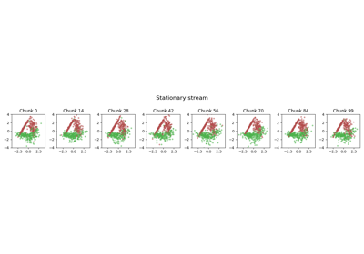

Getting Started
User guide
Documentation
Other informations
General-purpose and introductory examples for the stream-learn toolbox.
The simplest experiment example with one classifier and two metrics¶
Basic example of stationary synthetic stream processing¶

Plotting example data streams¶
Gallery generated by Sphinx-Gallery